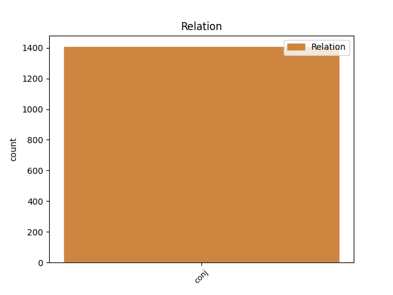
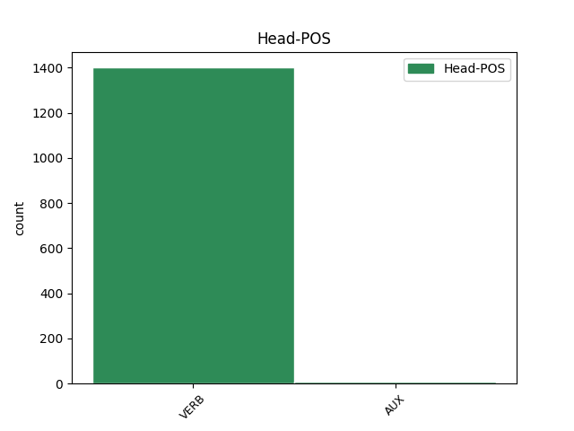
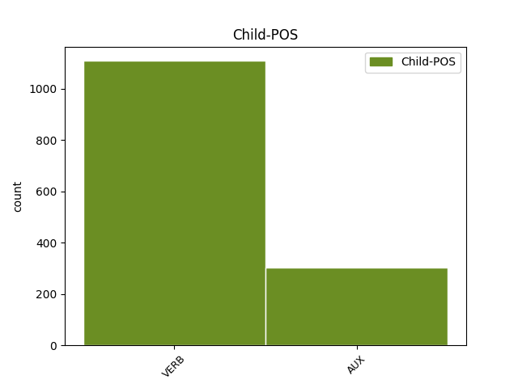

Distribution of features within this leaf



Agreement Rules sorted by frequency.
- When the dependent token is the conjunct(conj) of the head token, and the dependent token is VERB.
1 در _ _ _ _ 0 _ _ _
2 این _ _ _ _ 0 _ _ _
3 دیدار _ _ _ _ 0 _ _ _
4 آقازاده _ _ _ _ 0 _ _ _
5 رئیس _ _ _ _ 0 _ _ _
6 سازمان _ _ _ _ 0 _ _ _
7 انرژی _ _ _ _ 0 _ _ _
8 اتمی _ _ _ _ 0 _ _ _
9 از _ _ _ _ 0 _ _ _
10 کمکهای _ _ _ _ 0 _ _ _
11 آژانس _ _ _ _ 0 _ _ _
12 به _ _ _ _ 0 _ _ _
13 ایران _ _ _ _ 0 _ _ _
14 در _ _ _ _ 0 _ _ _
15 مورد _ _ _ _ 0 _ _ _
16 ایمنی _ _ _ _ 0 _ _ _
17 نیروگاه _ _ _ _ 0 _ _ _
18 بوشهر _ _ _ _ 0 _ _ _
19 تشکر _ _ _ _ 0 _ _ _
20 کرد کرد#کن VERB V_PA Number=Sing|Person=3|Tense=Past 0 _ _ _
21 و _ _ _ _ 0 _ _ _
22 گفت گفت#گو VERB V_PA Number=Sing|Person=3|Tense=Past 20 conj _ SpaceAfter=No
23 : _ _ _ _ 0 _ _ _
24 دولت _ _ _ _ 0 _ _ _
25 ایران _ _ _ _ 0 _ _ _
26 مایل _ _ _ _ 0 _ _ _
27 است _ _ _ _ 0 _ _ _
28 از _ _ _ _ 0 _ _ _
29 کمکهای _ _ _ _ 0 _ _ _
30 فنی _ _ _ _ 0 _ _ _
31 بیشتری _ _ _ _ 0 _ _ _
32 بهرهمند _ _ _ _ 0 _ _ _
33 شود _ _ _ _ 0 _ _ _
34 . _ _ _ _ 0 _ _ _
1 از _ _ _ _ 0 _ _ _
2 این _ _ _ _ 0 _ _ _
3 رو _ _ _ _ 0 _ _ _
4 اسلام _ _ _ _ 0 _ _ _
5 در _ _ _ _ 0 _ _ _
6 چنین _ _ _ _ 0 _ _ _
7 مواردی _ _ _ _ 0 _ _ _
8 میفرماید _ _ _ _ 0 _ _ _
9 با _ _ _ _ 0 _ _ _
10 قدرت _ _ _ _ 0 _ _ _
11 قانون _ _ _ _ 0 _ _ _
12 را _ _ _ _ 0 _ _ _
13 اجرا _ _ _ _ 0 _ _ _
14 کنید کرد#کن VERB V_SUB Mood=Sub|Number=Plur|Person=2|Tense=Pres 0 _ _ _
15 و _ _ _ _ 0 _ _ _
16 گرفتار _ _ _ _ 0 _ _ _
17 احساسات _ _ _ _ 0 _ _ _
18 نشوید کرد#کن AUX V_SUB Mood=Sub|Number=Plur|Person=2|Polarity=Neg|Tense=Pres 14 conj _ SpaceAfter=No
19 . _ _ _ _ 0 _ _ _
Disagree Examples:
1 مادر _ _ _ _ 0 _ _ _
2 : _ _ _ _ 0 _ _ _
3 نزدیک _ _ _ _ 0 _ _ _
4 بود _ _ _ _ 0 _ _ _
5 یاد _ _ _ _ 0 _ _ _
6 م _ _ _ _ 0 _ _ _
7 بره _ _ _ _ 0 _ _ _
8 [ _ _ _ _ 0 _ _ _
9 بالاخره _ _ _ _ 0 _ _ _
10 گره _ _ _ _ 0 _ _ _
11 باز _ _ _ _ 0 _ _ _
12 میشود _ _ _ _ 0 _ _ _
13 ] _ _ _ _ 0 _ _ _
14 اینو _ _ _ _ 0 _ _ _
15 بابا _ _ _ _ 0 _ _ _
16 ت _ _ _ _ 0 _ _ _
17 داد _ _ _ _ 0 _ _ _
18 به _ _ _ _ 0 _ _ _
19 ت _ _ _ _ 0 _ _ _
20 بدم _ VERB V_SUB Mood=Sub|Number=Sing|Person=1|Tense=Pres 0 _ _ _
21 [ _ _ _ _ 0 _ _ _
22 دهتومانی _ _ _ _ 0 _ _ _
23 را _ _ _ _ 0 _ _ _
24 به _ _ _ _ 0 _ _ _
25 طرف _ _ _ _ 0 _ _ _
26 ش _ _ _ _ 0 _ _ _
27 دراز _ _ _ _ 0 _ _ _
28 میکند _ _ _ _ 0 _ _ _
29 ] _ _ _ _ 0 _ _ _
30 گفت گفت#گو VERB V_PA Number=Sing|Person=3|Tense=Past 20 conj _ SpaceAfter=No
31 : _ _ _ _ 0 _ _ _
32 شیرینی _ _ _ _ 0 _ _ _
33 روزه _ _ _ _ 0 _ _ _
34 گرفتن _ _ _ _ 0 _ _ _
35 ت _ _ _ _ 0 _ _ _
36 . _ _ _ _ 0 _ _ _
1 پدر _ _ _ _ 0 _ _ _
2 قرآن _ _ _ _ 0 _ _ _
3 را _ _ _ _ 0 _ _ _
4 میبندد _ _ _ _ 0 _ _ _
5 و _ _ _ _ 0 _ _ _
6 میبوسد _ VERB V_PRS Number=Sing|Person=3|Tense=Pres 0 _ _ _
7 و _ _ _ _ 0 _ _ _
8 در _ _ _ _ 0 _ _ _
9 جلو _ _ _ _ 0 _ _ _
10 میگذارد گذارد#گذار VERB V_PA Number=Sing|Person=3|Tense=Past 6 conj _ SpaceAfter=No
11 . _ _ _ _ 0 _ _ _
1 برای _ _ _ _ 0 _ _ _
2 همین _ _ _ _ 0 _ _ _
3 با _ _ _ _ 0 _ _ _
4 آقای _ _ _ _ 0 _ _ _
5 رایانی _ _ _ _ 0 _ _ _
6 نشستیم _ _ _ _ 0 _ _ _
7 و _ _ _ _ 0 _ _ _
8 صحبتهای _ _ _ _ 0 _ _ _
9 زیادی _ _ _ _ 0 _ _ _
10 کردیم کرد#کن VERB V_PA Number=Plur|Person=1|Tense=Past 0 _ _ _
11 تا _ _ _ _ 0 _ _ _
12 به _ _ _ _ 0 _ _ _
13 یک _ _ _ _ 0 _ _ _
14 جمعبندی _ _ _ _ 0 _ _ _
15 کلی _ _ _ _ 0 _ _ _
16 رسیدیم _ _ _ _ 0 _ _ _
17 و _ _ _ _ 0 _ _ _
18 این _ _ _ _ 0 _ _ _
19 که _ _ _ _ 0 _ _ _
20 تمام _ _ _ _ 0 _ _ _
21 مشکلات _ _ _ _ 0 _ _ _
22 ما _ _ _ _ 0 _ _ _
23 برمیگردد بر#گشت#گرد VERB V_PRS Number=Sing|Person=3|Tense=Pres 10 conj _ _
24 به _ _ _ _ 0 _ _ _
25 معضل _ _ _ _ 0 _ _ _
26 فرهنگی _ _ _ _ 0 _ _ _
27 مان _ _ _ _ 0 _ _ _
28 : _ _ _ _ 0 _ _ _
29 خانواده _ _ _ _ 0 _ _ _
30 و _ _ _ _ 0 _ _ _
31 جامعه _ _ _ _ 0 _ _ _
32 ، _ _ _ _ 0 _ _ _
33 که _ _ _ _ 0 _ _ _
34 باعث _ _ _ _ 0 _ _ _
35 ازدیاد _ _ _ _ 0 _ _ _
36 معضلات _ _ _ _ 0 _ _ _
37 شده _ _ _ _ 0 _ _ _
38 ؛ _ _ _ _ 0 _ _ _
39 اینها _ _ _ _ 0 _ _ _
40 همه _ _ _ _ 0 _ _ _
41 چیزهایی _ _ _ _ 0 _ _ _
42 بود _ _ _ _ 0 _ _ _
43 که _ _ _ _ 0 _ _ _
44 وقتی _ _ _ _ 0 _ _ _
45 ما _ _ _ _ 0 _ _ _
46 وارد _ _ _ _ 0 _ _ _
47 کار _ _ _ _ 0 _ _ _
48 شدیم _ _ _ _ 0 _ _ _
49 به _ _ _ _ 0 _ _ _
50 ش _ _ _ _ 0 _ _ _
51 رسیدیم _ _ _ _ 0 _ _ _
52 و _ _ _ _ 0 _ _ _
53 دیدیم _ _ _ _ 0 _ _ _
54 که _ _ _ _ 0 _ _ _
55 کار _ _ _ _ 0 _ _ _
56 بهقدری _ _ _ _ 0 _ _ _
57 پیچیده _ _ _ _ 0 _ _ _
58 است _ _ _ _ 0 _ _ _
59 که _ _ _ _ 0 _ _ _
60 حتی _ _ _ _ 0 _ _ _
61 گروههایی _ _ _ _ 0 _ _ _
62 میطلبید _ _ _ _ 0 _ _ _
63 که _ _ _ _ 0 _ _ _
64 هر _ _ _ _ 0 _ _ _
65 گروه _ _ _ _ 0 _ _ _
66 بروند _ _ _ _ 0 _ _ _
67 دنبال _ _ _ _ 0 _ _ _
68 یکی _ _ _ _ 0 _ _ _
69 . _ _ _ _ 0 _ _ _
1 من _ _ _ _ 0 _ _ _
2 معضلات _ _ _ _ 0 _ _ _
3 فرهنگی _ _ _ _ 0 _ _ _
4 را _ _ _ _ 0 _ _ _
5 به _ _ _ _ 0 _ _ _
6 این _ _ _ _ 0 _ _ _
7 خاطر _ _ _ _ 0 _ _ _
8 عنوان _ _ _ _ 0 _ _ _
9 کردم _ _ _ _ 0 _ _ _
10 که _ _ _ _ 0 _ _ _
11 وقتی _ _ _ _ 0 _ _ _
12 وارد _ _ _ _ 0 _ _ _
13 جامعه _ _ _ _ 0 _ _ _
14 شدیم _ _ _ _ 0 _ _ _
15 و _ _ _ _ 0 _ _ _
16 رفتیم _ _ _ _ 0 _ _ _
17 بین _ _ _ _ 0 _ _ _
18 مردم _ _ _ _ 0 _ _ _
19 ، _ _ _ _ 0 _ _ _
20 با _ _ _ _ 0 _ _ _
21 این _ _ _ _ 0 _ _ _
22 دید _ _ _ _ 0 _ _ _
23 که _ _ _ _ 0 _ _ _
24 معضلاتی _ _ _ _ 0 _ _ _
25 هست _ _ _ _ 0 _ _ _
26 و _ _ _ _ 0 _ _ _
27 میخواهیم _ _ _ _ 0 _ _ _
28 این _ _ _ _ 0 _ _ _
29 معضلات _ _ _ _ 0 _ _ _
30 را _ _ _ _ 0 _ _ _
31 بررسی _ _ _ _ 0 _ _ _
32 کنیم کرد#کن VERB V_SUB Mood=Sub|Number=Plur|Person=1|Tense=Pres 0 _ _ _
33 ، _ _ _ _ 0 _ _ _
34 با _ _ _ _ 0 _ _ _
35 آدمها _ _ _ _ 0 _ _ _
36 تکتک _ _ _ _ 0 _ _ _
37 صحبت _ _ _ _ 0 _ _ _
38 کردیم کرد#کن VERB V_PA Number=Plur|Person=1|Tense=Past 32 conj _ _
39 توی _ _ _ _ 0 _ _ _
40 زندان _ _ _ _ 0 _ _ _
41 ، _ _ _ _ 0 _ _ _
42 توی _ _ _ _ 0 _ _ _
43 پارک _ _ _ _ 0 _ _ _
44 ، _ _ _ _ 0 _ _ _
45 دختر _ _ _ _ 0 _ _ _
46 و _ _ _ _ 0 _ _ _
47 پسرهای _ _ _ _ 0 _ _ _
48 فراری _ _ _ _ 0 _ _ _
49 ، _ _ _ _ 0 _ _ _
50 بچههای _ _ _ _ 0 _ _ _
51 گدا _ _ _ _ 0 _ _ _
52 ، _ _ _ _ 0 _ _ _
53 و _ _ _ _ 0 _ _ _
54 سارق _ _ _ _ 0 _ _ _
55 - _ _ _ _ 0 _ _ _
56 که _ _ _ _ 0 _ _ _
57 همه _ _ _ _ 0 _ _ _
58 اینها _ _ _ _ 0 _ _ _
59 به _ _ _ _ 0 _ _ _
60 یک _ _ _ _ 0 _ _ _
61 چیز _ _ _ _ 0 _ _ _
62 برمیگردد _ _ _ _ 0 _ _ _
63 : _ _ _ _ 0 _ _ _
64 بنیان _ _ _ _ 0 _ _ _
65 سست _ _ _ _ 0 _ _ _
66 خانواده _ _ _ _ 0 _ _ _
67 . _ _ _ _ 0 _ _ _
1 بدون _ _ _ _ 0 _ _ _
2 این _ _ _ _ 0 _ _ _
3 که _ _ _ _ 0 _ _ _
4 بفهمیم _ _ _ _ 0 _ _ _
5 ، _ _ _ _ 0 _ _ _
6 یک _ _ _ _ 0 _ _ _
7 دفعه _ _ _ _ 0 _ _ _
8 میبینیم _ _ _ _ 0 _ _ _
9 مدل _ _ _ _ 0 _ _ _
10 موهای _ _ _ _ 0 _ _ _
11 مان _ _ _ _ 0 _ _ _
12 عوض _ _ _ _ 0 _ _ _
13 شد _ _ _ _ 0 _ _ _
14 ؛ _ _ _ _ 0 _ _ _
15 بدون _ _ _ _ 0 _ _ _
16 این _ _ _ _ 0 _ _ _
17 که _ _ _ _ 0 _ _ _
18 بدانیم _ _ _ _ 0 _ _ _
19 میبینیم دید#بین VERB V_PRS Number=Plur|Person=1|Tense=Pres 0 _ _ _
20 تن _ _ _ _ 0 _ _ _
21 مان _ _ _ _ 0 _ _ _
22 شلوارهای _ _ _ _ 0 _ _ _
23 آن _ _ _ _ 0 _ _ _
24 چنانی _ _ _ _ 0 _ _ _
25 شد _ _ _ _ 0 _ _ _
26 ؛ _ _ _ _ 0 _ _ _
27 یک _ _ _ _ 0 _ _ _
28 دفعه _ _ _ _ 0 _ _ _
29 دیدیم _ VERB V_PA Number=Plur|Person=1|Tense=Past 19 conj _ _
30 که _ _ _ _ 0 _ _ _
31 پسر _ _ _ _ 0 _ _ _
32 کسی _ _ _ _ 0 _ _ _
33 که _ _ _ _ 0 _ _ _
34 معلم _ _ _ _ 0 _ _ _
35 استاد _ _ _ _ 0 _ _ _
36 دانشگاه _ _ _ _ 0 _ _ _
37 مثلا _ _ _ _ 0 _ _ _
38 در _ _ _ _ 0 _ _ _
39 رشته _ _ _ _ 0 _ _ _
40 معضلات _ _ _ _ 0 _ _ _
41 اجتماعی _ _ _ _ 0 _ _ _
42 است _ _ _ _ 0 _ _ _
43 ، _ _ _ _ 0 _ _ _
44 پلاک _ _ _ _ 0 _ _ _
45 RAP _ _ _ _ 0 _ _ _
46 انداخته _ _ _ _ 0 _ _ _
47 گردن _ _ _ _ 0 _ _ _
48 ش _ _ _ _ 0 _ _ _
49 . _ _ _ _ 0 _ _ _